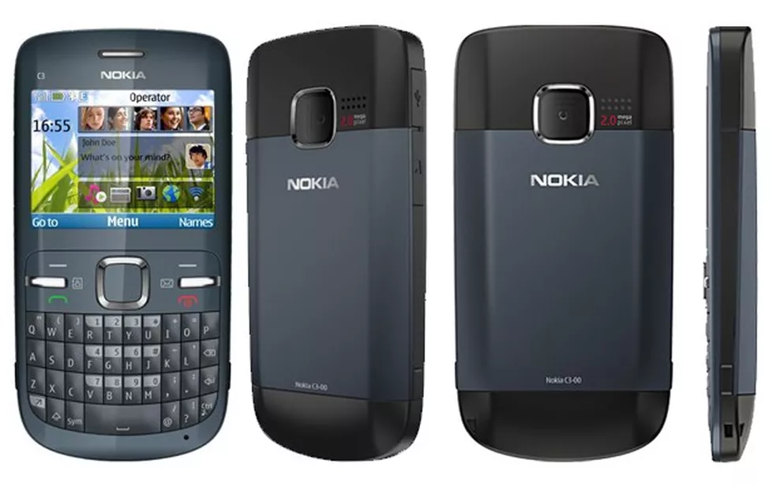

Celulares Antigos
Nokia C3 ( 2010 )
Dados
Lançamento: Outubro de 2010
Preço: R$ 449,00
Sistema Operacional: Symbian 40 6th Edition
Dimensões: 115 x 58 x 13 mm
Peso: 114 gramas
Dados técnicos
Processador: 1 Core
RAM: 64 MB
ROM: 128 MB
Memória MAX: 55 MB
Memória Expansível: Micro SD até 8 GB
História
O Nokia C3-00 foi anunciado em 13 de abril de 2010 e iniciou sua venda na Espanha e no México começou a ser vendido no final de julho do mesmo ano, já no Brasil foi lançado em outubro ainda em 2010. Possuia modelos de quatro cores: azul elétrico, branco e dourado, rosa e em meados de 2011 foi lançado em sua cor violeta. Nos primeiros meses o telefone foi vendido com uma capa de silicone nas cores azul ou rosa e logo depois foi anunciado a liberação de outro modelo em cor marrom.
Imagens
